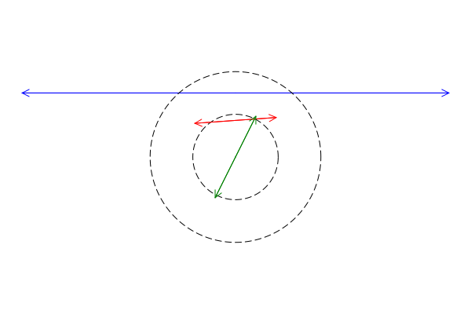

Clines
A cline is a circle or a line in the plane.
Construction
A cline is specified by three points in the plane represented by complex numbers. If the three points are collinear, then a line is created. Otherwise, there is a unique circle containing those three points and that is what is returned.
julia> using Clines
julia> Cline(2-im, 3im, 1-im)
Circle(1.5, 1.25, 2.3048861143232218)
julia> L = Cline(0, 1+im, -1-im)
Line(1.0 + 1.0im, -1.0 - 1.0im)Notes
If two of the arguments to
Clineare equal, then aLineis created through the two distince points.If one of the arguments to
Clineis infinite, aLineis created through the two (finite) points.Note that the
Clinesmodule defines two data types:CircleandLine, and these are subtypes of the abstract typeCline.A
Circlecan be directly constructed by specifying a centerzand a radiusrlike this:Circle(z,r).A
Linecan be directly constructed by specifying two pointswandzlike this:Line(w,z).
Inspection
For any cline C, the function three_points(C) returns a list of three complex numbers that are distinct points on C.
- In the case of a circle, the three points are equally spaced around the circle at 0, 120, and 240 degrees starting from the far right.
- For a line, the three points are the two points used to define the line and their midpoint.
For a circle C, we have the following:
center(C)returns the center of the circle as a complex number.radius(C)returns the radius of the circle.area(C)returns the area of the circle.circumference(C)returns the circumference.
For a line L, we have the following:
slope(L)returns the slope of the line (possiblyInf).dilate(L,factor=2)creates a newLineobject that is equal toLbut whose defining points are further apart by a factor offactor.
Pairs
Intersection
Given two clines C and D use intersect(C,D) or C ∩ D to return a set of points that are common to the two clines. This set may have zero, one, or two elements.
julia> C = Circle(0im, 1)
Circle(0.0, 0.0, 1.0)
julia> D = Circle(0.5im,1)
Circle(0.0, 0.5, 1.0)
julia> C ∩ D
Set{ComplexF64} with 2 elements:
-0.9682458365518543 + 0.25im
0.9682458365518543 + 0.25imNote: If the two clines are equal, a warning is issued and the emptyset it returned.
Angle
For two clines, angle(C,D) computes the angle of intersection in the range [0,π/2]. If the clines do not intersect, an error is thrown. Note that parallel lines are considered to intersect at infinity and their angle is reported as 0.
Containment
For a point z and a cline C, use in(z,C) or z ∈ C to test of if z lies on C.
julia> C = Circle(0im,1)
Circle(0.0, 0.0, 1.0)
julia> z = 0.6 + 0.8im
0.6 + 0.8im
julia> z ∈ C
trueFor two circles C and D, use issubset(C,D) or C ⊆ D to test if the circle C is contained inside circle D.
Linear Fractional (Möbius) Transformations
Clines can be used to define and to be transformed by Linear Fractional Transformations.
If F is a linear fractional transformation, then F(C) is the result of applying F to the cline C.
Given a cline C, calling LFT(C) returns a linear fractional transformation that maps C to the x-axis.
Given two clines C and D, calling LFT(C,D) returns a linear fractional transformation that maps C to D.
Inversion
To find the inversion of a point or a cline through another cline, use inv:
inv(C,z)finds the image of the pointzby inversion throughC.inv(C,D)finds the image of clineDby inversion throughC.
Calling inv(C) returns a function F with the property that F(x) gives inv(C,x).
Visualization
The function draw will draw a Cline on the screen using SimpleDrawing in conjunction with Plots.
Drawing circles
julia> using SimpleDrawing, Plots
julia> C = Circle(0,0,1)
Circle(0.0, 0.0, 1.0)
julia> D = Circle(0.25,.5,1.25)
Circle(0.25, 0.5, 1.25)
julia> E = Circle(.2,.2,.5)
Circle(0.2, 0.2, 0.5)
julia> newdraw(); draw(C); draw(D,linecolor=:red); draw(E,fill=true,color=:yellow)Here is the result:
Drawing lines
Since lines are infinite, drawing them presents a challenge. For a line L, calling draw(L) will draw L in the current graphics window as a line segment with arrows on each end. However, if the line does not overlap the current window, nothing is drawn.
This is illustrated in the following two examples.
In this first example, we draw a circle of radius 1 and then three lines. One of the lines (slated to be blue) lies outside the frame so it is not drawn. We then add a circle of radius 2.
newdraw()
draw(Circle(0, 0, 1), color = :black, style = :dash)
draw(Line(0, 0, 1, 2), color = :green)
draw(Line(-5, 0.5, 2, 1), color = :red)
draw(Line(-5, 1.5, 5, 1.5), color = :blue)
draw(Circle(0, 0, 2), color = :black, style = :dash)Here is the result:

However, in this second example, we draw the big circle first (causing the plotting area to be larger) and then draw the lines and the smaller circle. The window is large enough for the blue line appears.
newdraw()
draw(Circle(0, 0, 2), color = :black, style = :dash)
draw(Line(0, 0, 1, 2), color = :green)
draw(Line(-5, 0.5, 2, 1), color = :red)
draw(Line(-5, 1.5, 5, 1.5), color = :blue)
draw(Circle(0, 0, 1), color = :black, style = :dash)As shown in the figure, the blue line is now present.
Forced line drawing
Because lines outside the frame of the window do not appear, we provide the function force_draw. This draws the line as a double-arrowed segment joining the two points that define the line.
newdraw()
draw(Circle(0, 0, 1), color = :black, style = :dash)
draw(Line(-5, 0.5, 2, 1), color = :red)
draw(Line(0, 0, 1, 2), color = :green)
force_draw(Line(-5, 1.5, 5, 1.5), color = :blue)
draw(Circle(0, 0, 2), color = :black, style = :dash)Here is the result:

Roundoff Problems
Most of the operations in this module subject to roundoff errors. For example, to test if a point z lies on a circle C we would compute the distance from z to the center of C and check if that equals the radius. However, because of roundoff errors, a strict test for equality may yield false when mathematically the result should be true.
We provide the following funtions for dealing with roundoff errors:
set_tolerance(tol)sets the tolerance for roundoff errors totol. Without an argument, we set the tolerance to the module's default value.get_tolerance()returns the current tolerance setting.
For example:
julia> C = Circle(0,0,sqrt(2)); # circle of radius sqrt(2)
julia> z = sqrt(2) * exp(im); # mathematically, this is a point on C
julia> z ∈ C # success
true
julia> set_tolerance(1e-100) # make tolerance unreasonably small
1.0e-100
julia> z ∈ C # test fails
falseKissing Circles
Given three (noncollinear) points a, b, and c, the function kiss(a,b,c) returns a list of three circles whose centers are a, b, and c that are pairwise tangent.
Then, given three mutually tangent circles, the function soddy returns a circle that is tangent to all three and nestled in the space between them.
julia> CC = kiss(-1,2im,1-im)
3-element Vector{Circle}:
Circle(-1.0, 0.0, 0.6549291474156)
Circle(0.0, 2.0, 1.5811388300841898)
Circle(1.0, -1.0, 1.5811388300841898)
julia> S = soddy(CC...)
Circle(-0.21638837510877562, 0.26120387496374137, 0.17107003113165417)
julia> newdraw(); draw.(CC); draw(S,fill=true,color=:red); finish()Here is the result:

Other
collinear(a,b,c)determines if the points specified by the three complex numbers are collinear.